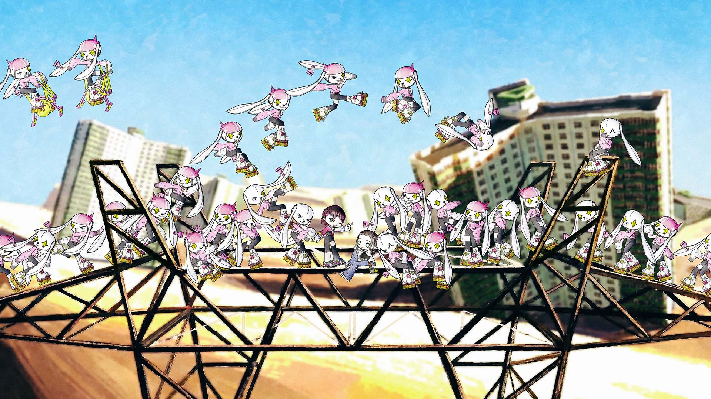
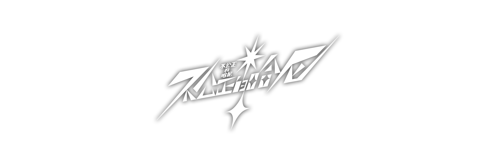

❮
❯
×
不公正的哈尼
斑丘资料库
首页
游戏总览
人物档案
斑丘景色
斑丘卡牌
剧情备忘录
其他
☰
首页
游戏总览
人物档案
斑丘景色
斑丘卡牌
剧情备忘录
其他


☰
正文：开始阅读
目錄
✕
目录
其他规则
此处内容已同步
```
卡牌目录
档案目录
景色索引
總覽章節
开始吧！
战斗吧！
装备吧！
不公正吧！
NICKNAME
×
立绘暂缺
基本档案
外号 / 本名
-
性别 / 年龄
-
/
-
职业印象
-
出身学校
-
所属社团
-
加入时间
-
体力
0
物攻
0
物防
0
法攻
0
法防
0
校徽
社团
❮
❯
×
❮
❯
×
❮
❯